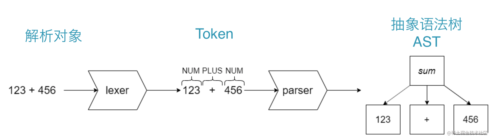
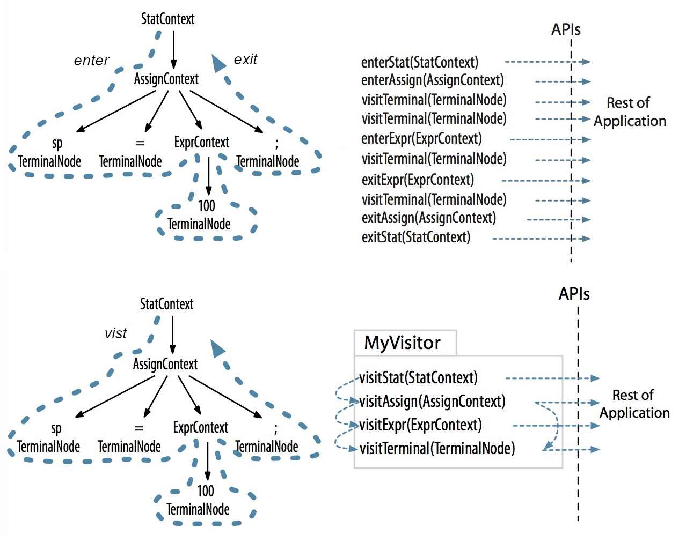

Ch01-Antlr V4 介绍
August 1, 2019
ANTLR（ANother Tool for Language Recognition）是一个强大的解析器生成器，用于读取、处理、执行或翻译结构化文本或二进制文件。它被广泛用于构建语言、工具和框架。ANTLR 根据语法定义生成解析器，解析器可以构建和遍历解析树。
1. 基本信息 #
| 条目 | 说明 |
|---|---|
| 官网 | http://antlr.org/ |
| 下载地址 | https://github.com/antlr/antlr4 |
2. 基本概念 #

- 词法分析器 (Lexer) 词法分析是指在计算机科学中，将字符序列转换为单词 (Token) 的过程。词法分析器 (Lexer) 一般是用来供语法解析器 (Parser) 调用的。
- 语法解析器 (Parser) 语法解析器通常作为编译器或解释器出现。它的作用是进行语法检查，并构建由输入单词 (Token) 组成的数据结构 (即抽象语法树)。语法解析器通常使用词法分析器 (Lexer) 从输入字符流中分离出一个个的单词 (Token)，并将单词 (Token) 流作为其输入。实际开发中，语法解析器可以手工编写，也可以使用工具自动生成。
- 抽象语法树 (Abstract Syntax Tree，AST) 抽象语法树是源代码结构的一种抽象表示，它以树的形状表示语言的语法结构。抽象语法树一般可以用来进行代码语法的检查，代码风格的检查，代码的格式化，代码的高亮，代码的错误提示以及代码的自动补全等等。
3. 访问模式 #
ANTLR 提供了两种方法来访问 ParseTree，一种是通过 Parse-Tree Listener 的方法，另一种是通过 Parse-Tree Visitor 的方法。
| 条目 | 说明 |
|---|---|
| Listener | 访问 AST 的所有节点；重写（Override）进入时（enterXXX 方法）和退出时（exitXXX 方法）要执行的方法；要重写的方法没有返回值，因此需要在属性中保留所需的值 |
| Visitor | 并非所有 AST 节点都被访问；根据目的重写进入节点时要执行的过程（visitXXX 方法）；重写方法有一个返回值，因此您不必在属性中保存所需的值 |
